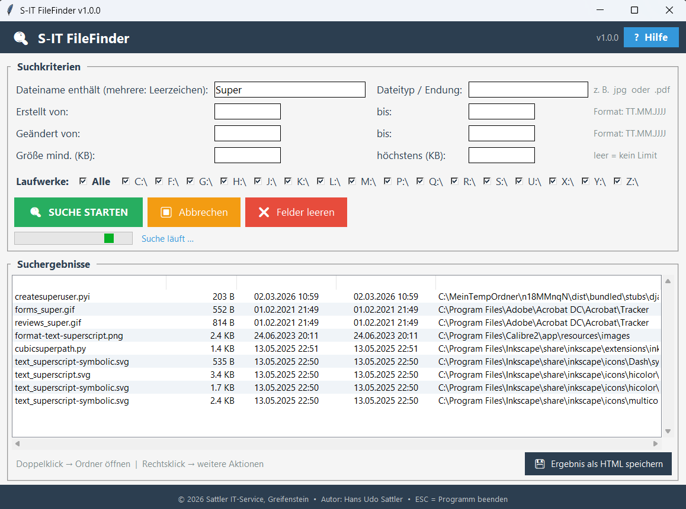

Leistungsmerkmale
Windows-Bordmittel und Tools wie Everything sind für erfahrene Nutzer gemacht. S-IT FileFinder richtet sich an alle, die einfach nur eine Datei wiederfinden wollen – ohne Syntaxkenntnisse, ohne Handbuch.
Namensbruchstücke
Suche nach einem oder mehreren Teilen des Dateinamens – durch Leerzeichen getrennt, Groß-/Kleinschreibung egal.
Dateityp / Endung
Gezielt nach Dateitypen suchen – z. B. jpg, .pdf oder docx, mit oder ohne Punkt.
Datum eingrenzen
Erstell- und Änderungsdatum als Von/Bis-Bereich angeben – Format TT.MM.JJJJ, beide Felder optional.
Dateigröße
Mindest- und Höchstgröße in Kilobyte – findet z. B. alle Bilder zwischen 100 KB und 5 MB.
Alle Laufwerke
Lokale Laufwerke und eingebundene Netzlaufwerke per Checkbox auswählen – einzeln oder alle auf einmal.
HTML-Ergebnislog
Suchergebnisse als HTML-Datei speichern – Dateinamen und Ordnerpfade sind direkt anklickbar.
Screenshot

Download & Dokumentation
Die aktuelle Version und die Hilfe-Datei findest du im Release-Bereich auf GitHub.
Systemanforderungen
| Komponente | Anforderung |
|---|---|
| Betriebssystem | Windows 10 / Windows 11 (64-Bit) |
| Rechte | Keine Administratorrechte erforderlich |
| Installation | Nicht erforderlich – portabel, direkt aus dem Ordner startbar |
| Lieferumfang | EXE + HTML-Hilfedatei |
Sicherheits- und Installationshinweis
Hinweis zu Virenscannern & SmartScreen
Da es sich um ein unabhängig entwickeltes Windows-Tool handelt, kann es vorkommen, dass Windows SmartScreen oder installierte Internet-Security-Programme die Datei zunächst als unbekannt einstufen.
In diesem Fall fügen Sie das Programm bitte als vertrauenswürdig bzw. als Ausnahme in Ihrer Sicherheitssoftware hinzu.
Changelog
Version 1.0.0 – Erstveröffentlichung
Suche nach Namensbruchstücken, Dateityp, Erstell-/Änderungsdatum und Dateigröße. Multi-Laufwerk-Unterstützung, HTML-Ergebnislog mit klickbaren Pfaden, Hilfe-Button mit HTML-Dokumentation.
Kontakt / Spende
Hat Ihnen dieses Tool geholfen?
S-IT FileFinder wird kostenlos entwickelt und gepflegt.
Eine kleine Spende hilft dabei, die Tools weiterzuentwickeln. Herzlichen Dank! 🙏
tool-entwicklung@sattler-it.de